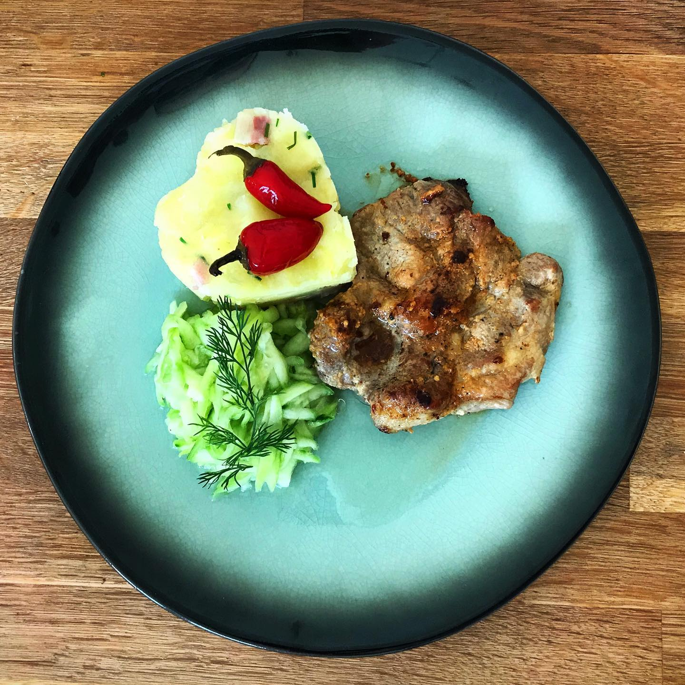

Uhorkový šalát podľa @schwammellenka — Normy Jedál
Krkovička s cesnakom a horčicou ( na spôsob cigánskej pečienky) štuchané zemiaky s opraženou slaninkou a cibuľkou a čerstvou pažítkou, uhorkový šalát s kôprom. 😋
Mäso naklepeme, osolíme, okorenime, potrieme horčicou a cesnakom a necháme v chladničke aspoň 2 hodiny (ak sa podarí aj cez noc do druhého dňa tak ešte lepšie) prudko opečieme z obidvoch strán a potom prikryjeme panvicu vrchnákom a necháme dobehnúť.
Štuchané zemiaky
Zemiaky uvaríme a zatiaľ si pripravíme na troche tuku cibuľku a slaninku, opekáme na miernom stupni až do “chrumkava” potom pridame zemiaky a varechou pučíme a ohrievame a premiešavame. Posypeme čerstvou pažítkou a môžeme podávať. #roastedpork #mashedpotatoes #cucumber #cucumbersalad #ciganska#ciganskapecienka #ciganskapecenka #uhorkovysalat #okurkovysalat #lienkanavarila #mamusa #cookingmom #homemadefood #varimdoma #dnesjem #neodolatelnedobre #mamavari #mamusa